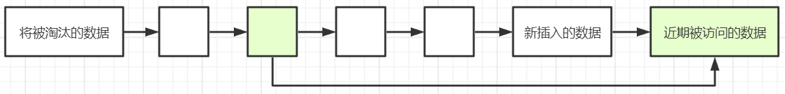

惰性删除
根据实际的业务情况，为键值对设置一个合理的过期时间，当键值对存活了该时间之后，Redis会自动清除掉该过期的键值对。这样做可以节约对内存的占用，避免键值对过多的堆积，防止频繁的触发内存淘汰策略。
Redis有四个命令可以用于设置键的生存时间或过期时间：
- EXPIRE KEY_NAME SECONDS //设置key的生存时间，单位秒
- PEXPIRE KEY_NAME MILLISECONDS //设置key的生存时间，单位毫秒
- EXPIREAT KEY_NAME TIME_IN_UNIX_TIMESTAMP //将key的过期时间设置为指定的秒数时间戳
- PEXPIREAT KEY_NAME TIME_IN_MILLISECONDS_IN_UNIX_TIMESTAMP //将key的过期时间设置为指定的毫秒数时间戳
1 | 127.0.0.1:6380> set pastKey pastValue |
lazy free特性
Redis 4.0中新增了lazy free功能，可以在删除的时候异步延时释放键值，把键值释放操作放在BIO单独的子线程中进行处理，以减少删除时对Redis主线程的阻塞，可以有效地避免删除比较大的key时带来的性能问题和可用性问题。
lazy free对应了四种场景，默认都是关闭的：
1 | lazyfree-lazy-eviction no |
- lazyfree-lazy-eviction：当Redis运行内存超过最大内存时，是否开启lazy free机制删除
- lazyfree-lazy-expire：设置了过期时间的键值，当过期之后是否开启lazy free机制删除
- lazyfree-lazy-server-del：Redis中某些指令在处理已存在的键时，会带有一个隐式的删除键的操作，比如rename命令，当目标键已存在，Redis会先删除目标键，如果此时目标键是一个比较大的key，就会造成阻塞问题。此配置表示在这种场景中是否开启lazy free机制删除
- slave-lazy-flush：针对slave从节点进行全量数据同步时，slave在加载master的RDB文件前，会运行flushall来清理自己的数据。此配置表示在该场景下是否开启lazy free机制删除
建议开启这四项配置，这样可以有效的提高主线程的执行效率。
限制Redis内存大小
通过maxmemory属性来指定Redis的内存大小，其单位可以是B、KB、MB、GB、K、M、G
如果没有指定最大缓存，当有新数据添加进来超过了最大内存时，在32位操作系统中会使Redis崩溃，所以一定要设置最大缓存。
在64位操作系统中Redis的内存大小没有限制，maxmemory配置项被注释掉，如果物理内存不足时，会使用swap交换空间作为虚拟内存，但是当操作系统将Redis所用的内存分页移至swap空间时，将会阻塞Redis进程，导致Redis出现延迟，从而影响Redis的整体性能。因此也需要限制Redis的内存大小为一个固定的值，当Redis的运行到达此值时会触发内存淘汰策略。
LRU
LRU（Least recently used，最近最少使用）根据数据的历史访问记录来淘汰数据，其核心思想是：如果数据最近被访问过，那么将来被访问的几率也更高。
最常见的实现是使用一个链表来保存缓存数据：

- 新数据将被插入到链表的头部
- 每当缓存数据被访问，则将数据移到表的头部
- 当链表满的时候，将链表尾部的数据丢弃
LFU
LFU（Least Frequently Used，最少被使用）在一段时间内，数据被使用频次最少的，优先被淘汰。LFU是一种用于管理计算机内存的缓存算法，主要是记录和追踪内存块的使用次数，当缓存已满并且需要更多空间时，系统将以最低内存块使用频率清除内存。采用LFU算法的最简单方法是为每个加载到缓存的块分配一个计数器。每次引用该块时，计数器增加一。当缓存达到容量并有一个新的内存块等待插入时，系统将搜索计数器最低的块并将其从缓存中删除。
LRU与LFU比较
LRU和LFU侧重点不同，LRU主要体现在对元素的使用时间上，而LFU主要体现在对元素的使用频次上。LFU存在的一定的缺陷：在短期时间内，对某些缓存的访问频次很高，这些缓存会立刻晋升为热点数据，而保证不会被淘汰，这些缓存就将驻留在系统内存中，而实际上这部分数据只是短暂的高频率访问，之后将会长时间不被访问；另外，一些新加入的缓存也很容易被快速删除，因为它们的引用频率很低。
Redis缓存淘汰策略
Redis内存数据集大小上升到一定大小的时候，就会实行缓存淘汰策略
Redis使用maxmemory-policy来配置缓存淘汰策略
Redis 4.0之后有8种缓存淘汰策略：
- noeviction：不淘汰任何数据，当内存不足时，新增操作会报错，Redis默认为该策略
- allkeys-lru：淘汰整个键值中最久未使用的键值
- allkeys-random：随机淘汰任意键值
- volatile-lru：淘汰所有设置了过期时间的键值中最久未使用的键值
- volatile-random：随机淘汰设置了过期时间的任意键值
- volatile-ttl：优先淘汰更早过期的键值
- volatile-lfu：淘汰所有设置了过期时间的键值中，最少使用的键值
- allkeys-lfu：淘汰整个键值中最少使用的键值
其中allkeys-xxx表示从所有的键值中淘汰数据，而volatile-xxx表示从设置了过期时间的键值中淘汰数据。